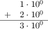

Intermezzo 4: The Nature of Numbers
When it comes to numbers, programming languages mediate the gap between the
underlying hardware and true mathematics. The typical computer hardware
represents numbers with fixed-size chunks of data;These
chunks are called bits, bytes, and words.
they also come with processors that work on just such chunks. In
paper-and-pencil calculations, we don’t worry about how many digits we
process; in principle, we can deal with numbers that consist of one digit,
10 digits, or 10,000 digits. Thus, if a programming language uses the
numbers from the underlying hardware, its calculations are as efficient as
possible. If it sticks to the numbers we know from mathematics, it must
translate those into chunks of hardware data and back—
This intermezzo explains the hardware representation of numbers as an exercise in data representation. Concretely, the first subsection introduces a concrete fixed-size data representation for numbers, discusses how to map numbers into this representation, and hints at how calculations work on such numbers. The second and third sections illustrate the two most fundamental problems of this choice: arithmetic overflow and underflow, respectively. The last one sketches how arithmetic in the teaching languages works; its number system generalizes what you find in most of today’s programming languages. The final exercises show how bad things can get when programs compute with numbers.
Fixed-Size Number Arithmetic
Suppose we can use four digits to represent numbers. If we represent natural numbers, one representable range is [0,10000). For real numbers, we could pick 10,000 fractions between 0 and 1 or 5,000 between 0 and 1 and another 5,000 between 1 and 2, and so on. In either case, four digits can represent at most 10,000 numbers for some chosen interval, while the number line for this interval contains an infinite number of numbers.
a mantissa, which is a base number, and
an exponent, which is used to determine a 10-based factor.
; N Number N -> Inex ; makes an instance of Inex after checking the arguments (define (create-inex m s e) (cond [(and (<= 0 m 99) (<= 0 e 99) (or (= s 1) (= s -1))) (make-inex m s e)] [else (error "bad values given")])) ; Inex -> Number ; converts an inex into its numeric equivalent (define (inex->number an-inex) (* (inex-mantissa an-inex) (expt 10 (* (inex-sign an-inex) (inex-exponent an-inex)))))
(define-struct inex [mantissa sign exponent]) ; An Inex is a structure: ; (make-inex N99 S N99) ; An S is one of: ; – 1 ; – -1 ; An N99 is an N between 0 and 99 (inclusive).
(create-inex 12 1 2)
> (create-inex 120 1 1) bad values given
> (create-inex 50 -1 20) (make-inex 50 -1 20)
> (create-inex 5 -1 19) (make-inex 5 -1 19)
(create-inex 12 1 2)
(create-inex 13 1 2)
(inex+ (create-inex 1 1 0) (create-inex 2 1 0)) == (create-inex 3 1 0)

(inex+ (create-inex 55 1 0) (create-inex 55 1 0)) == (create-inex 11 1 1)
(inex+ (create-inex 56 1 0) (create-inex 56 1 0)) == (create-inex 11 1 1)
(inex* (create-inex 2 1 4) (create-inex 8 1 10)) == (create-inex 16 1 14)
(inex* (create-inex 20 1 1) (create-inex 5 1 4)) == (create-inex 10 1 6)
(inex* (create-inex 27 -1 1) (create-inex 7 1 4)) == (create-inex 19 1 4)
Exercise 412. Design inex+. The function adds two Inex representations of numbers that have the same exponent. The function must be able to deal with inputs that increase the exponent. Furthermore, it must signal its own error if the result is out of range, not rely on create-inex for error checking.
(check-expect (inex+ (create-inex 1 1 0) (create-inex 1 -1 1)) (create-inex 11 -1 1))
Exercise 413. Design inex*. The function multiplies two Inex representations of numbers, including inputs that force an additional increase of the output’s exponent. Like inex+, it must signal its own error if the result is out of range, not rely on create-inex to perform error checking.
Exercise 414. As this section illustrates, gaps in the data representation lead to round-off errors when numbers are mapped to Inexes. The problem is, such round-off errors accumulate across computations.
Design add, a function that adds up n copies of #i1/185. For your examples, use 0 and 1; for the latter, use a tolerance of 0.0001. What is the result for (add 185)? What would you expect? What happens if you multiply the result with a large number?
Design sub. The function counts how often 1/185 can be subtracted from the argument until it is 0. Use 0 and 1/185 for your examples. What are the expected results? What are the results for (sub 1) and (sub #i1.0)? What happens in the second case? Why?
Overflow
(inex+ (create-inex 50 1 99) (create-inex 50 1 99)) == (create-inex 100 1 99)
When overflow takes place, some language implementations signal an error and stop the computation. Others designate some symbolic value, called infinity, to represent such numbers and propagate it through arithmetic operations.
Note If Inexes had a sign field for the mantissa, then two negative numbers can add up to one that is so negative that it can’t be represented either. This is called overflow in the negative direction. End
(expt #i10.0 n)
Underflow
(inex* (create-inex 1 -1 10) (create-inex 1 -1 99)) == (create-inex 1 -1 109)
When underflow occurs, some language implementations signal an error; others use 0 to approximate the result. Using 0 to approximate underflow is qualitatively different from picking an approximate representation of a number in Inex. Concretely, approximating 1250 with (create-inex 12 1 2) drops significant digits from the mantissa, but the result is always within 10% of the number to be represented. Approximating an underflow, however, means dropping the entire mantissa, meaning the result is not within a predictable percentage range of the true result.
Exercise 416. ISL+ uses #i0.0 to approximate underflow. Determine the smallest integer n such that (expt #i10.0 n) is still an inexact ISL+ number and (expt #i10. (- n 1)) is approximated with 0. Hint Use a function to compute n. Consider abstracting over this function and the solution of exercise 415.
*SL Numbers
Most programming languages support only approximate number representationsInexact real representations come in several flavors: float, double, extflonum, and so on. and arithmetic for numbers. A typical language limits its integers to an interval that is related to the size of the chunks of the hardware on which it runs. Its representation of real numbers is loosely based on the sketch in the preceding sections, though with larger chunks than the four digits Inex uses and with digits from the 2-based number system.
The teaching languages support both exact and inexact numbers. Their integers and rationals are arbitrarily large and precise, limited only by the absolute size of the computer’s entire memory. For calculations on these numbers, our teaching languages use the underlying hardware as long as the involved rationals fit into the supported chunks of data; it automatically switches to a different representation and to a different version of the arithmetic operations for numbers outside of this interval. Their real numbers come in two flavors: exact and inexact. An exact number truly represents a real number; an inexact one approximates a real number in the spirit of the preceding sections. Arithmetic operations preserve exactness when possible; they produce an inexact result when necessary. Thus, sqrt returns an inexact number for both the exact and inexact representation of 2. In contrast, sqrt produces an exact 2 when given exact 4 and #i2.0 for an input of #i4.0. Finally, a numeric constant in a teaching program is understood as an exact rational, unless it is prefixed with #i.
Plain Racket interprets all decimal numbers as inexact numbers; it also renders all real numbers as decimals, regardless of whether they are exact or inexact. The implication is that all such numbers are dangerous because they are likely to be inexact approximations of the true number. A programmer can force Racket to interpret numbers with a dot as exact by prefixing numerical constants with #e.
At this point, you may wonder how much a program’s results may differ from
the true results if it uses these inexact numbers. This question is one
that early computer scientists struggled with a lot, and over the
pastFor an accessible introduction—
Exercise 417. Evaluate (expt 1.001 1e-12) in Racket and in ISL+. Explain what you see.
(define JANUS (list 31.0 #i2e+34 -1.2345678901234999e+80 2749.0 -2939234.0 #i-2e+33 #i3.2e+270 17.0 #i-2.4e+270 #i4.2344294738446e+170 1.0 #i-8e+269 0.0 99.0))
> (expt 2 #i53.0) #i9007199254740992.0
> (sum (list #i1.0 (expt 2 #i53.0))) #i9007199254740992.0
> (sum (list #i1.0 #i1.0 (expt 2 #i53.0))) #i9007199254740994.0
(exact->inexact (sum (map inexact->exact JANUS)))
(define (oscillate n) (local ((define (O i) (cond [(> i n) '()] [else (cons (expt #i-0.99 i) (O (+ i 1)))]))) (O 1)))

> (sum (oscillate #i1000.0)) #i-0.49746596003269394
> (sum (reverse (oscillate #i1000.0))) #i-0.4974659600326953
The question is which numbers programmers should use in their programs if they are given a choice. The answer depends on the context, of course. In the world of financial statements, numerical constants should be interpreted as exact numbers, and computational manipulations of financial statements ought to be able to rely on the exactness-preserving nature of mathematical operations. After all, the law cannot accommodate the serious errors that come with inexact numbers and their operations. In scientific computations, however, the extra time needed to produce exact results might impose too much of a burden. Scientists therefore tend to use inexact numbers but carefully analyze their programs to make sure that the numerical errors are tolerable for their uses of the outputs of programs.